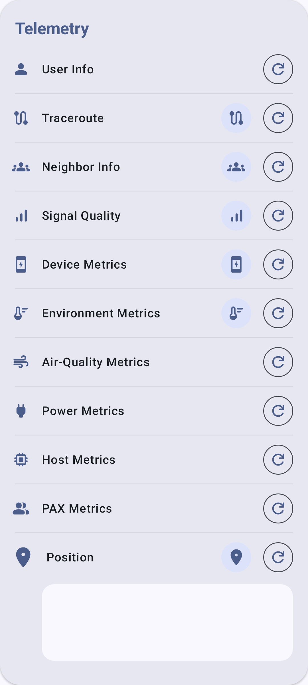

Telemetria ja anturit
Meshtastic-radiot voivat kerätä ja jakaa anturitietoja koko verkon laajuisesti.
Yleiskatsaus
Telemetria mahdollistaa antureilla varustettujen radioiden ympäristö-, virta- ja laitteen kuntotietojen lähettämisen verkkoon. Nämä tiedot näkyvät radion tietonäytössä ja niitä voidaan tallentaa sekä seurata ajan kuluessa.
Laitteen telemetriatiedot
Kaikki Meshtastic-radiot raportoivat peruslaitetelemetrian:
| Metrijärjestelmä | Kuvaus | Tyypillinen vaihteluväli |
|---|---|---|
| Akun varaustaso | Varausprosentti | 0–100% |
| Jännite | Akun jännite | 3.0–4.2V (LiPo) |
| Kanavan Käyttö | Paikallisesti käytetyn käyttöasteen prosenttiosuus | 0–100% |
| Lähetysajan käyttöaste (TX) | Tämän radion käyttämän lähetysajan prosenttiosuus | 0–100% |
| Käyttöaika | Sekuntia viimeisestä käynnistyksestä | Vaihtelee |
Ympäristöanturit
Tuetut ympäristöanturit:
Lämpötila ja kosteus
| Sensor | Lämpötila | Kosteus | Ilmanpaine | Viestit |
|---|---|---|---|---|
| BME280 | ✓ | ✓ | ✓ | Suositeltu all-in-one-anturi |
| BME680 | ✓ | ✓ | ✓ | Lisää kaasuvastus ja IAQ-mittaukset |
| SHT31 | ✓ | ✓ | — | Korkea tarkkuus |
| MCP9808 | ✓ | — | — | Tarkka lämpötilamittaus |
| LPS22 | — | — | ✓ | Vain ilmanpaine |
Ilmanlaatu
| Sensor | Metrijärjestelmä | Viestit |
|---|---|---|
| BME680 | Kaasuvastus ja IAQ | Haihtuvat orgaaniset yhdisteet |
| PMSA003I | PM1.0, PM2.5, PM10 | Hiukkaset |
| SEN55 | PM, NOx, VOC, lämpötila, kosteus | Monianturi |
Valo ja UV
| Sensor | Metrijärjestelmä |
|---|---|
| OPT3001 | Ympäristön valoisuus (lux) |
| VEML7700 | Ympäristön valoisuus (lux) |
| LTR390 | UV-indeksi |
Virranhallinnan arvot
INA-sarjan virta-antureilla varustetut radiot voivat raportoida:
| Metrijärjestelmä | Kuvaus |
|---|---|
| Väyläjännite | Syöttöjännitteen |
| Virta | Virrankulutuksen (mA) |
| Virta | Lasketun tehon (mW) |
Hyödyllinen aurinkolatauksen tai etäradioiden akun kunnon seurantaan.
Telemetrian määrittäminen
- Siirry kohtaan Asetukset → Moduuliasetukset → Telemetria
- Määritä raportointivälit:
- Laitemittarien väli — kuinka usein laitteen mittarit lähetetään verkkoon
- Ympäristömittarien väli — kuinka usein anturitiedot lähetetään verkkoon
- Ota tarvittavat anturityypit käyttöön.
Suositellut raportointivälit
| Käyttötarkoitus | Laite (s) | Ympäristö (s) |
|---|---|---|
| Kaupunkiverkko (paljon radioita) | 3600 | 3600 |
| Maaseutuverkko (vähän radioita) | 900 | 900 |
| Sääasema | 900 | 300 |
| Akun säästäminen | 7200 | 7200 |
⚠️ Huomautus: Lyhyemmät välit lisäävät käyttöastetta ja akun kulutusta koko verkossa.
Ilmanlaatumittarit
Hiukkas- tai CO₂-antureilla varustetut radiot raportoivat ilmanlaatutietoja:
| Metrijärjestelmä | Yksikkö | Kuvaus |
|---|---|---|
| PM1.0 | µg/m³ | Erittäin pienet hiukkaset |
| PM2.5 | µg/m³ | Pienhiukkaset |
| PM10 | µg/m³ | Karkeat hiukkaset |
| CO₂ | ppm | Hiilidioksidipitoisuus |
Myös CO₂ anturit, kuten SCD4x, ilmoittavat oman lämpötilansa ja ilmankosteutensa, jotka näytetään edellä olevien mittausten yhteydessä. PM2.5-historiasta sovellus laskee lisäksi EPA NowCast AQI -arvon.
CO₂-arvo on värikoodattu vakavuuden mukaan (Hyvä → Tunkkainen → Huono → Epäturvallinen → Evakuoi). Katso Radion mittarit — Ilmanlaatu, josta löytyvät tarkat ppm-arvot, värit ja AQI-luokituksen tiedot.
Ilmanlaatutiedot voidaan näyttää tietokortteina radion tietonäytössä, esittää kaavioina ajan kuluessa ja viedä CSV-tiedostoon.
Telemetrian tarkastelu
- Siirry kohtaan Radiot ja valitse radio.
- Telemetriaosiot näkyvät radion tietonäytössä:
- Laitemittarit (aina käytettävissä)
- Ympäristömittarit (jos antureita on saatavilla)
- Virtamittarit (jos INA-anturi on käytettävissä)
- Ilmanlaatumittarit (jos PM-/CO₂-anturi on käytettävissä)
- Historiakaaviot näyttävät mittaustietojen kehittymisen ajan kuluessa.

Vianetsintä
- Ympäristötiedot eivät näy? Etäradio tarvitsee fyysisen anturin (esim. BME280 I²C-väylässä). Laitetelemetria (akun varaustaso, käyttöaika) on aina käytettävissä, mutta ympäristömittarit edellyttävät laitteistoa.
- Vanhentuneita lukemia? Tarkista raportointiväli — erittäin pitkät välit (7200 s tai enemmän) tarkoittavat, että tiedot päivittyvät harvoin. Varmista myös, että etäradio on edelleen verkossa.
- Anturiristiriita I²C-väylässä? Jotkin anturit käyttävät samoja I²C-osoitteita. Jos samalla väylällä on useita antureita, tarkista osoiteristiriidat radion sarjaportin virheenkorjaustulosteesta.
Aiheeseen liittyvät aiheet
- Radion mittarit — tarkastele telemetriatietoja radion tietonäytössä
- Asetukset — Moduulit ja ylläpito — telemetriamoduulin määritys
- Yksiköt ja aluekohtaiset asetukset — lämpötilan ja ilmanpaineen näyttöyksiköt